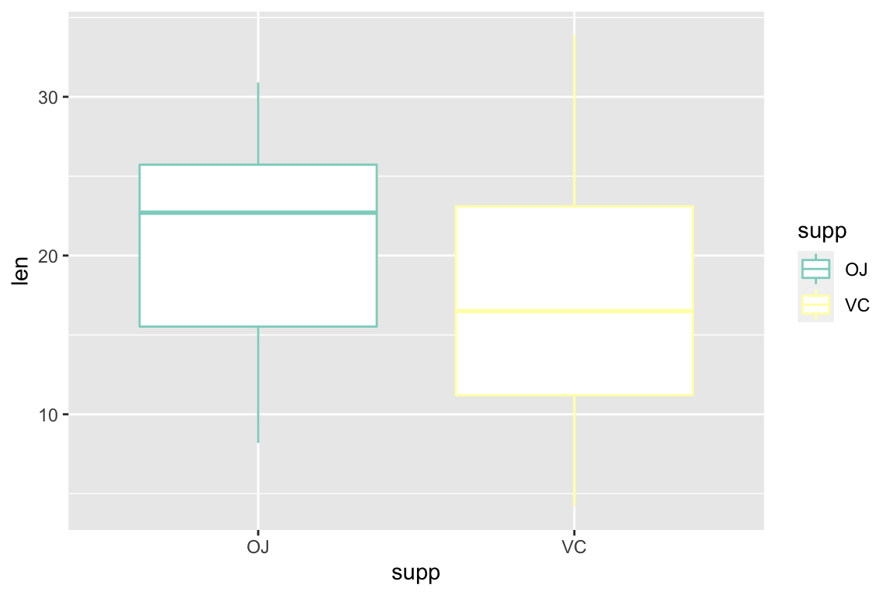

Day 2: Adding Color in ggplot2
Kathleen Hablutzel
6/11/2020
Getting Started
Here is the recording of today’s lesson. (This is only accessible within the NCSSM organization.) You can also follow along with the code below.
Today we will:
- Add themes to plots (ggthemes)
- Add color scales (RColorBrewer)
- Add themes to R Markdown documents and specify chunk options
- Learn about visual cues
Packages to install:
- ggthemes
- RColorBrewer
Questions from Last Week
What editor theme am I using? Under RStudio > Preferences > Appearance, you can explore different themes for your editor. I prefer the Cobalt theme for its inverted colors and slightly blue theme, but I encourage you to play around with different options and find a favorite! (Remember to click “Apply”)
How do your graphs show up in the plot window? We noticed last week that the default settings for chunk output are “Preview in Window” and “Chunk Output Inline.” I find both clunky, so I have my settings on “Preview in Viewer Pane” and “Chunk Output in Console.” You can change this under the gear at the top of your editor next to the Knit button, or you can go under RStudio > Preferences > RMarkdown, uncheck “Show chunk output inline for all R Markdown documents”, and change “Show ouput preview in:” to “Viewer Pane.” (Remember to click “Apply”)
Last Week’s Challenge
Last week, I challenged you to copy a graph. I don’t expect you to have gotten everything, but here’s the code:
storm_plot <- ggplot(data = storms, aes(x = wind, y = pressure)) +
geom_point(aes(color = status)) +
labs(
title = "Pressure vs. Wind Speed of Atlantic Storms",
caption = "Source: NOAA",
x = "Maximum Sustained Wind Speed (knots)",
y = "Air Pressure at Storm Center (millibars)",
color = "Status"
) +
scale_color_manual(
labels = c("Hurricane", "Tropical Depression", "Tropical Storm"),
values = c("#6f18ad", "#f051bb", "#faf600")
) +
theme(
text = element_text(family = "Arial"),
rect = element_blank(),
axis.line = element_line(color = "gray40"),
panel.grid = element_line(color = "gray90"),
legend.position = "bottom"
)
storm_plot
Adding Colors and Themes
Now that we’ve learned how to create chart elements with geom_*() (where * could be any element), let’s add some color to our visualizations. We added elements using the + operator, and we can add color and themes using + as well!
Let’s store a plot we can add various colors onto:
myplot <- ggplot(data = storms, aes(x = wind, y = pressure)) +
geom_point(aes(color = status))
myplotAdding Themes
Themes are a quick way to get a great-looking plot. Download the ggthemes package, load it, and just add them on!
library(ggthemes)
myplot +
theme_fivethirtyeight()See the documentation for a list of available themes.
Color Palettes
Choosing colors can be hard. We use ColorBrewer color palettes from the RColorBrewer package for ready-made user-friendly color palettes. Let’s see what palettes are available:
library(RColorBrewer)
display.brewer.all()
(The Zoom option near the Plots tab will let you zoom in on the color palettes in a larger window.)
We can add colors to our plots using the scale_color_brewer() function:
myplot +
scale_color_brewer(palette = "YlOrRd")This one is hard to distinguish. Let’s try a palette designed for qualitative data.
myplot +
scale_color_brewer(palette = "Set1")Types of Color Palettes
If we go back to the ColorBrewer website, we see that there are three types of palettes available: Sequential, Diverging, and Qualitative. Each type of color palette is designed for a specific kind of data.
**Sequential Data:** Data with an order. The darkest color is perceived as the greatest. Using this scale continuously provides more detail, but the eye has trouble distinguishing more than 5-6 levels, so you can also use these scales discretely for more clear distinctions.
**Diverging Data:** Data where both the low and high extremes are notable. Two colors indicate the extremes of the range with a neutral color in the middle. Be careful that your neutral color is distinguishable from your missing data! (Missing data is often gray or white.)
**Qualitative Data:** Aka Categorical Data. Data in different categories. Choose colors that are perceptually different but have approximately the same saturation so that categories seem distinct.
With all three types of palettes, beware colorblindness. (For example, Red-Green diverging is a bad choice, because both extremes will look similar to those with Red-Green colorblindness.)
If we view the RColorBrewer palettes again, we see that the first section of palettes is sequential, the second is categorical, and the third is diverging.
display.brewer.all()Brewer vs. Distiller
If we try to apply a color brewer scale to continuous data, we run into an error:
car_plot <- ggplot(data = mtcars, aes(x = wt, y = mpg)) +
geom_point(aes(color = hp))car_plot +
scale_color_brewer(palette = "YlOrBr")“Error: Continuous value supplied to discrete scale”
We’re trying to use discrete colors on continuous data, and R doesn’t know how to make those colors continuous. Luckily, we can change our color function slightly and distill these discrete colors into continuous colors. Instead of scale_color_brewer(), we use scale_color_distiller().
car_plot +
scale_color_distiller(palette = "YlOrBr")Now, we have a continuous color scale for our continuous data.
Color vs. Fill
If we try to apply our color scales to a boxplot or barchart, it looks like almost nothing happens!
teeth <- ggplot(data = ToothGrowth, aes(x = supp, y = len)) +
geom_boxplot(aes(color = supp))
teeth +
scale_color_brewer(palette = "Set3")
Color works on points and lines. To fill in whole rectangles, we set the fill parameter instead, and we use scale_fill_*() instead of scale_color_*().
teeth <- ggplot(data = ToothGrowth, aes(x = supp, y = len)) +
geom_boxplot(aes(fill = supp))
teeth +
scale_fill_brewer(palette = "Set3")Unpacking Last Week’s Challenge Graph
Now, you know how to apply themes from ggthemes using theme_*() and palettes from RColorBrewer using scale_*_*(). What else do you need to complete last week’s challenge graph?
storm_plot <- ggplot(data = storms, aes(x = wind, y = pressure)) +
geom_point(aes(color = status)) +
labs(
title = "Pressure vs. Wind Speed of Atlantic Storms",
caption = "Source: NOAA",
x = "Maximum Sustained Wind Speed (knots)",
y = "Air Pressure at Storm Center (millibars)",
color = "Status"
) +
scale_color_manual(
labels = c("Hurricane", "Tropical Depression", "Tropical Storm"),
values = c("#6f18ad", "#f051bb", "#faf600")
) +
theme(
text = element_text(family = "Arial"),
rect = element_blank(),
axis.line = element_line(color = "gray40"),
panel.grid = element_line(color = "gray90"),
legend.position = "bottom"
)
storm_plot
Manual Color Scales
We can apply discrete color scales with scale_color_brewer() and continuous color scales with scale_color_distiller(). You can also design your own color scales manually with scale_color_manual(). You will need to specify a vector of color values to use:
myplot +
scale_color_manual(
values = c("#6f18ad", "#f051bb", "#faf600")
)myplot
I usually specify colors using the Hex format, which use pairs of two digits to specify how much red, green, and blue to use in a color, always preceeded by a hash and written as a string (in quotes). For example, all green with no red or blue would be “#00FF00”. I encourage you all to learn more about Hex colors, but for now let’s use a color picker tool to choose fun colors. There are also a multitude of online color palette generators to help you get creative with your palettes.
This scale_color_manual() function also lets you rename the colors of your color scale. Specify these labels in the labels parameter:
myplot <- myplot +
scale_color_manual(
values = c("#6f18ad", "#f051bb", "#faf600"),
labels = c("Hurricane", "Tropical Depression", "Tropical Storm")
)
myplotPlot Labels
While we’re at it, let’s fix up our other plot labels as well. We can change many of these with the labs() function.
myplot <- myplot +
labs(
title = "Pressure vs. Wind Speed of Atlantic Storms",
caption = "Source: NOAA",
x = "Maximum Sustained Wind Speed (knots)",
y = "Air Pressure at Storm Center (millibars)",
color = "Status"
)
myplottitle gives a title, caption gives the citation at the bottom, and the x, y, and color parameters each rename a dimension/axis of data.
Themes
I changed a few different parameters of the theme() function in hopes that you would delve more into the theme documentation (?theme) and explore the many possibilities.
myplot <- myplot +
theme(
text = element_text(family = "Arial"),
rect = element_blank(),
axis.line = element_line(color = "gray40"),
panel.grid = element_line(color = "gray90"),
legend.position = "bottom"
)
myplot
And that’s the plot!
RMarkdown Themes and Options
Just like your plots are very customizable, your HTML outputs from knitting your RMarkdown file are customizable as well! All these options are specified in the YAML header at the top of the document. YAML is a recursive acronym which stands for “YAML Ain’t Markup Language”, and the YAML header at the very top of our RMarkdown document (between the three dashes —) sets metadata about our file and HTML output.
For example:
output:
html_document:
fig_width: 6
fig_height: 7This a standard figure width and height for all the figures in our HTML output. Try knitting your document to see.
output:
html_document:
theme: yetiThis sets a Bootstrap theme for the HTML page. My website uses the yeti theme. The full list is here, so try playing with a few! (Knit again to see the new theme.)
output:
html_document:
code_folding: hideThis hides the code that gets output above your figures, and then allows the reader show and hide the code. You can also specify show to have the code automatically show with the option to hide.
output:
html_document:
toc: true
toc_depth: 4
toc_float: trueThis creates the floating table of contents for this page, automatically generating sections based on my headers. (Make different levels of headers in your text with different numbers of hashes, as seen in the RMarkdown reference guide.)
Chunk Names and Options
In the header of a code chunk (the {r} part), we can name chunks and specify chunk options. Naming a chunk looks like this:
{r Wind-Plot}
When you knit your document, you can see which named chunk is knitting, so you can quickly locate any errors.
We can also set options about how we want our code chunks to be run or displayed when we knit our RMarkdown document to HTML. We can set these chunk options for the whole document within knitr::opts_chunk$set() in the {r setup} chunk at the top of our file:
knitr::opts_chunk$set(
message = FALSE,
echo = TRUE
)
library(tidyverse)We can also override those chunk options by specifying them locally for a chunk. For example, when I hide the code for Challenge Graphs, I specify echo = FALSE:
{r Challenge-2, echo = FALSE}
Here are some of the available chunk options:
- With
message, we turn on and off messages from the code (message = TRUEandmessage = FALSE). I almost always usemessage = FALSE. - With
echo, we choose whether to display our code in the knit file (echo = TRUEandecho = FALSE). I usually enable code folding in the YAML header and chooseecho = TRUE, but otherwise I would hide the code withecho = FALSE. - With
eval, we choose whether to run the code at all when we knit. - With
include, we run the code, but we choose whether to display it in the final document.
There are a variety of available chunk options. See the full table in the RMarkdown reference.
Visual Cues
Finally, I’d like to leave you with a note about strong and weak visual cues. Some cues, like position and length, are easy for the eye to interpret. Others, like color saturation and hue, are harder for distinguishing information.
See the cues ranked on page 95 of this absolutely stunning data visualization textbook, Data Points by Nathan Yau (2013).
Also note that angle is worse than length at conveying differences between proportions, so stacked bar charts are better than pie charts! Plenty of bloggers offer their opinions on alternatives to pie charts.
Challenges for Next Week
Let’s apply what we just learned! Here are two graphs using the starwars dataset to try to copy for next week:
Hint: I wonder if this theme looks similar to one we’ve seen before…

Hint: Try a color picker tool, such as the one in PowerPoint, for the fills of this bar chart! Also, here’s the ggplot2 documentation for bar charts.
As always, please Slack me throughout the week with any questions! I’ll reveal the code for these challenges next week.